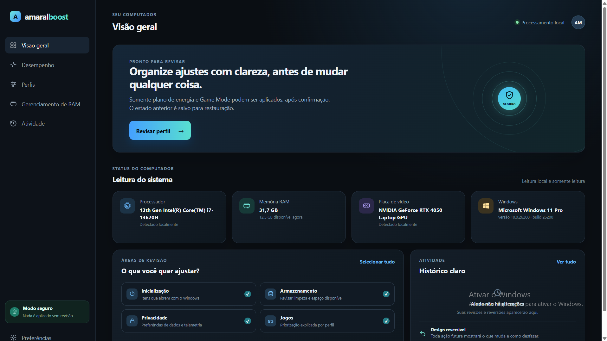

Visão clara do PC
Processador, memória, placa de vídeo e Windows organizados em uma única tela.
100% gratuito e open source
O Amaral Boost reúne leitura do sistema, perfis de uso e ajustes práticos para ajudar você a entender e preparar o computador para o que importa.
O código é público: baixe, use, estude e contribua com melhorias pelo GitHub.

01 / O QUE ELE ENTREGA
Você visualiza o que está acontecendo, escolhe o perfil ideal e revisa as mudanças antes de aplicá-las.
Processador, memória, placa de vídeo e Windows organizados em uma única tela.
Escolha entre Equilibrado, Gamer, Economia de bateria e Padrão Windows.
As alterações são apresentadas para revisão, com estado anterior salvo para restauração.
Acompanhe o consumo e defina um limite combinado para os navegadores do computador.
02 / TUTORIAL EM VÍDEO
Um passo a passo rápido mostrando os perfis, o painel de desempenho e os ajustes do sistema.
03 / POR DENTRO DO AMARAL BOOST
01 / 04
04 / APOIE O PROJETO
O projeto continua aberto para todo mundo. Doações de boa vontade ajudam a manter seu desenvolvimento.
05 / SUGESTÕES
Conte uma ideia, um ajuste ou algo que você gostaria de ver no Amaral Boost.
As sugestões enviadas neste navegador aparecerão aqui.
Amaral Boost